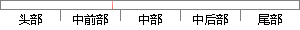

当然ReLU函数也有它的缺点，就是训练的时候会导致梯度更新很容易“死亡”，比如一个非常大的梯度流过一个ReLU神经元，更新过参数之后，这个神经元再也不会对任何数据有激活现象了，那么这个神经元的梯度就永远都是0。
片段位置图

相似结果|
1
原句片段：梯度流过一个ReLU神经元，更新过参数之后，这个神经元再也不会对任何数据有激活现象了，那么这个神经元的梯度就永远都是0。
相似片段 1：举个例子:一个非常大的梯度流过一个 ReLU 神经元,更新过参数之后,这个神经元再也不会对任何数据有激活现象了。如果这个情况发生了,那么这个神经元的梯度就永远...
相似片段 2：举例来说:一个非常大的梯度经过一个 ReLU 神经元,更新过参数之后,这个神经元再也不会对任何数据有激活现象了。如果这种情况发生,那么从此所有流过这个神经元的梯度...
相似片段 3：举个例子:一个非常大的梯度流过一个 ReLU 神经元,更新过参数之后,这个神经元再也不会对任何数据有激活现象了。 如果这个情况发生了,那么这个神经元的梯度就永远...
相似片段 4：举个例子:一个非常大的梯度流过一个 ReLU 神经元,更新过参数之后,这个神经元再也不会对任何数据有激活现象了。如果这个情况发生了,那么这个神经元的梯度就永远...
相似片段 5：举个例子:一个非常大的梯度流过一个 ReLU 神经元,更新过参数之后,这个神经元再也不会对任何数据有激活现象了。 如果这个情况发生了,那么这个神经元的梯度就永远...
相似片段 6：举例来说:一个非常大的梯度经过一个 ReLU 神经元,更新过参数之后,这个神经元再也不会对任何数据有激活现象了。如果这种情况发生,那么从此所有流过这个神经元的梯度...
相似片段 7：举个例子:一个非常大的梯度流过一个 ReLU 神经元,更新过参数之后,这个神 经元再也不会对任何数据有激活现象了。 如果这个情况发生了,那么这个神经元的梯度就...
相似片段 8：举个例子:一个非常大的梯度流过一个 ReLU 神经元,更新过参数之后,这个神经元再也不会对任何数据有激活现象了。 如果这个情况发生了,那么这个神经元的梯度就永远...
相似片段 9：缺点:例如,一个非常大的梯度流过一个 ReLU 神经元,更新过参数之后,这个神经元再也不会对任何数据有激活现象了,那么这个神经元的梯度就永远都会是 0. 如果learnin...
相似片段 10：举个例子:一个非常大的梯度流过一个 ReLU 神经元,更新过参数之后,这个神经元再也不会对任何数据有激活现象了。如果这个情况发生了,那么这个神经元的梯度就永远...
2
原句片段：当然ReLU函数也有它的缺点，就是训练的时候会导致梯度更新很容易“死亡”，比如一个非常大的
相似片段 1：我们会很自然的使用一些激活函数,比如:sigmoid、ReLU...ReLU 的缺点:当然 ReLU 也有缺点,就是训练的时候很...举个例子:一个非常大的梯度流过一个 ReLU 神经元...
相似片段 2：还被作用了一个函数,这个函数就是激活函数 ...Sigmoid 的饱和性虽然会导致梯度消失,但也有其有利...当然ReLU 也有缺点,就是训练的时候很”脆弱”,很容易...
|
※ 片段修改建议 ※
近似词参考：- 当然：固然
- 缺点：错误谬误 弱点 瑕玷 缺陷
- 就是：便是
- 训练：练习
- 时候：时辰 时刻 时间
- 导致：致使
- 容易：轻易
- 死亡：灭亡 殒命
- 比如：好比 譬如
- 之后：以后
- 据有：占有
- 现象：征象
- 那么：那末
系统自动生成语句：固然ReLU函数也有它的错误谬误，便是练习的时辰会致使梯度更新很轻易“灭亡”，好比一个非常大的梯度流过一个ReLU神经元，更新过参数以后，这个神经元再也不会对任何数占有激活征象了，那末这个神经元的梯度就永远都是0。
注：本片段修改建议为系统自动生成，仅供参考。